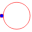
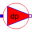

SourcesIdeal fluid sources, e.g., ambient, volume flow |
|
Package Contents
|
Ambient with constant properties |
|
|  |
Defines absolute pressure level |
|
Enforces constant volume flow |
|
|  |
Enforces constant pressure increase |
|
Model of an ideal pump |
Information
This information is part of the Modelica Standard Library maintained by the Modelica Association.
This package contains different types of sources:
- Ambient with constant or prescribed pressure and temperature
- AbsolutePressure to define pressure level of a closed cooling cycle.
- Constant and prescribed volume flow
- Constant and prescribed pressure increase
- Simple pump with mechanical flange
Thermodynamic equations are defined in partial models (package BaseClasses). All fans / pumps are considered without losses, they do not change enthalpy flow.